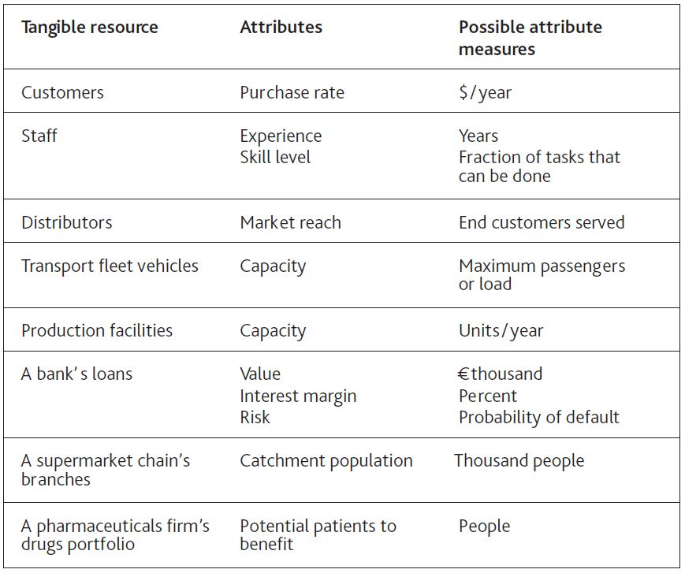
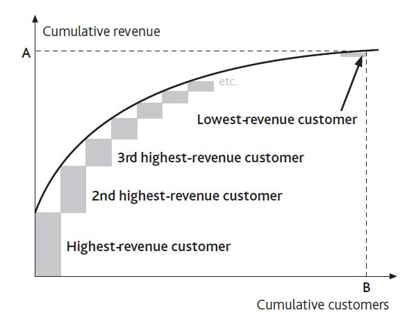
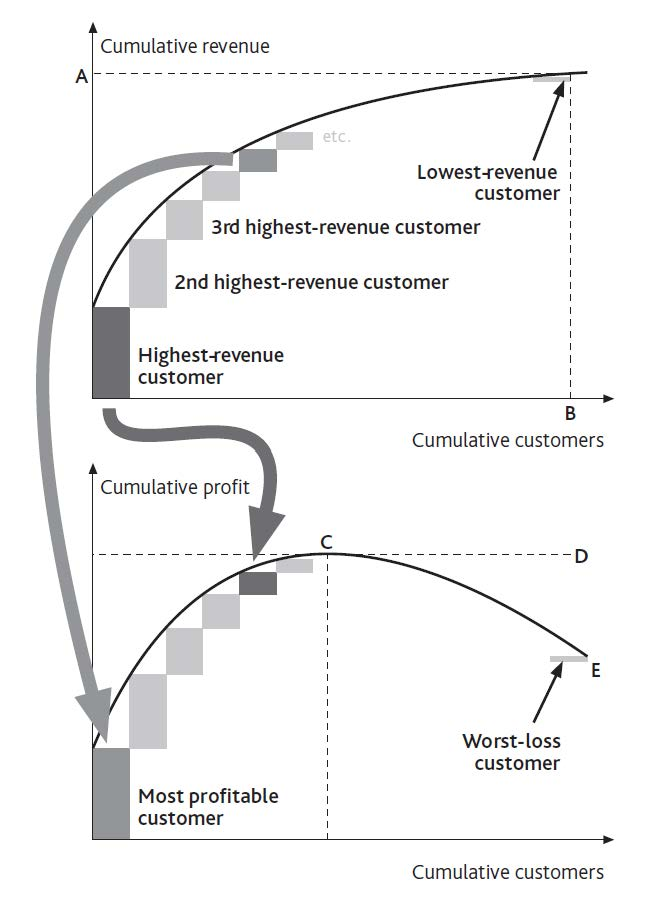

Few resources are as uniform as cash: Every dollar bill is the same as all the others. Most resources, however, vary in important ways:
A single resource may even carry several characteristics that influence how the resource stock as a whole affects other parts of the system. Individual bank customers, for example, feature different balances in their accounts, different numbers of products they use from the bank, different levels of risk of defaulting on loans, and so on. A resource attributeA characteristic that varies among different items in a single pool of resources. is a characteristic that varies between different items in a single pool of resources. These differences within each type of resource will themselves change through time. For example, if we lose our most profitable customers our operating profits will fall faster than if we lose only average customers.
If we are to understand how much difference such attributes make, it is just as important to measure each resource’s attributes as they change through time as it is to measure that resource’s overall quantity. Figure 6.1 "Examples of Attributes for Certain Resources" offers some measures that may apply in different cases. The right choice of measures will depend on the particular attribute influencing the issue you are concerned with.
We know that managing resources is tricky because they fill and drain away over time and depend on each other. To this challenge we must now add the problem that when a resource is won or lost, it brings or takes these attributes with it.
Figure 6.1 Examples of Attributes for Certain Resources
Moreover, attributes may be potential rather than actual and still require efforts on our part if they are to be developed. Opening a new retail store, for example, brings with it access to the population around that store. Those potential customers will only become actual customers if our stores provide attractive products, prices, and service.
Consider a firm concerned that it has too many small customers. To picture the extent of the problem, take the annual revenue contributed by the largest customer alone and add to it the contribution from the second largest, then the third, and so on. If we carry on doing this until the entire customer base is accounted for, we get a curve of cumulative revenue versus cumulative customers (Figure 6.2 "Revenue-Generating Profile of a Customer Base").
Not only is this a record of the present situation, but it can also be used to decide policy. The extent of the “tail” of small customers is visible, and average customer revenue can be easily calculated. Managers can discuss the relative merits of pruning the customer base by various degrees:
Figure 6.2 Revenue-Generating Profile of a Customer Base
It is important, however, to focus on the correct attribute for the intended purpose. Customer revenue is one useful measure but does not necessarily correspond to customer profitability. Figure 6.3 "Profitability Profile of a Customer Base" shows the link between the two attributes. It includes loss-makers: The positive contribution from the profitable customers on the left is partly negated by the losses from unprofitable customers on the right.
Here are two common observations to bear in mind:
You may need to think more widely about which attributes are important, apart from revenue and profit contribution. Most banks, for example, are engaged in a competitive pursuit of individuals with high net worth. These customers have large potential deposits and borrowing needs on which a bank can make a good margin. However, they are also the best informed and least loyal of customers, often following the best deals from bank to bank. Far from being the most valuable customers, they can be the most costly to serve.
The shape of the curves in Figure 6.3 "Profitability Profile of a Customer Base" should not simply be accepted as given but should be challenged. The airline industry offers a dramatic example. Customers who were willing to pay only low fares have been unprofitable to the major carriers for decades; they were far to the right on Figure 6.3 "Profitability Profile of a Customer Base". Southwest, Ryanair, easyJet, and the others rewrote the rule book, and the profit curve kept on climbing as more customers were added. They lifted point E above point D.
Figure 6.3 Profitability Profile of a Customer Base
There can be a limit to this potential, however, especially if fierce competition develops. In an effort to push revenues and profits still higher, these airlines risk extending the curves far out to the right. Sure, you might be able to capture another 1,000 customers by offering flights for $10, but if those passengers now cost more to win and serve than they contribute, they generate very little revenue and negative profits. This certainly proved to be the case for those banks who got overenthusiastic in offering subprime mortgages in the years up to 2008.
The tail of problem customers can completely wipe out the contribution from the profitable ones: Point E in Figure 6.3 "Profitability Profile of a Customer Base" can drop below zero. Such situations are especially punishing, and not simply because the business is unprofitable overall. The problematic resources impose heavy demands on the rest of the system and take up managers’ attention.
In retailing, for example, unprofitable branches are often disproportionately costly in terms of delivery, are frequently left with the least able management, and suffer from high staff turnover. Both McDonald’s (in the years up to 2002) and Starbucks (prior to 2005) fell into this trap, and both had to dig their way out of the problem caused by overexpansion. As the returning CEO of McDonald’s said in 2002, “We are in transition from a company that emphasizes ‘adding restaurants to customers’ to one that emphasizes ‘adding customers to restaurants’” (McDonald’s Corporation, 2003). This will continue to be a challenging issue for Blockbuster to manage as its stores suffer erosion of their sales by postal and online movie supply services.
Figure 6.3 "Profitability Profile of a Customer Base" is an improvement on Figure 6.2 "Revenue-Generating Profile of a Customer Base" but must still be handled with care. It may be unwise to eliminate all customers to the right of point C, for several reasons:
These cautionary points should not be overstated. When people argue that customers or products are interdependent and have great potential, take care to make an objective assessment. Do they really have great potential? Would you really lose some important business if you removed them?
Finally, note that it may be possible to do good business serving customers that, for other companies, are unattractive. The large information technology (IT) service providers such as EDS, Infosys, and CSC, for example, would not be interested for a moment in serving small business clients, but there is a thriving market for small computer support service providers among those same small clients. Taken to the extreme, it is even possible to develop attractive business models that focus exclusively on serving the poorest customers (Prahalad, 2006).